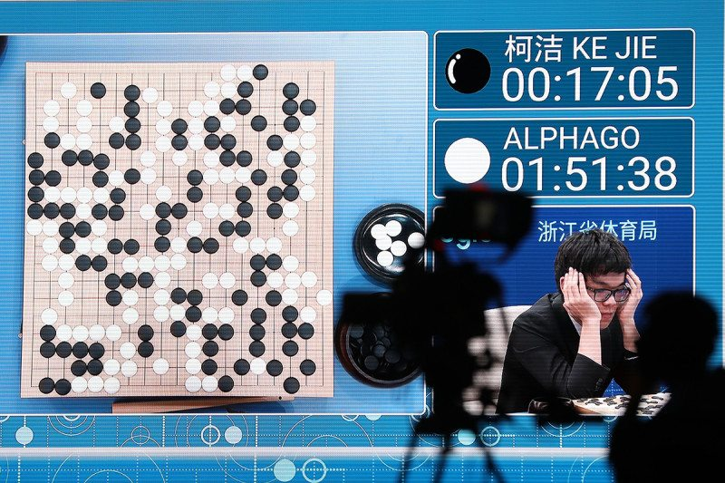

In May 2017, Alpha Go took part in The Future of Go Summit in the birthplace of Go, China, to delve deeper into the mysteries of Go in a spirit of mutual collaboration with the country’s top players.
升级Five months later, we received another Nature paper for AlphaGo Zero. Unlike the earlier versions of AlphaGo which learnt how to play the game using thousands of human amateur and professional games, AlphaGo Zero learnt to play the game of Go simply by playing games against itself, starting from completely random play. In doing so, it surpassed the performance of all previous versions, including those which beat the World Go Champions Lee Sedol and Ke Jie, becoming arguably the strongest Go player of all time.
